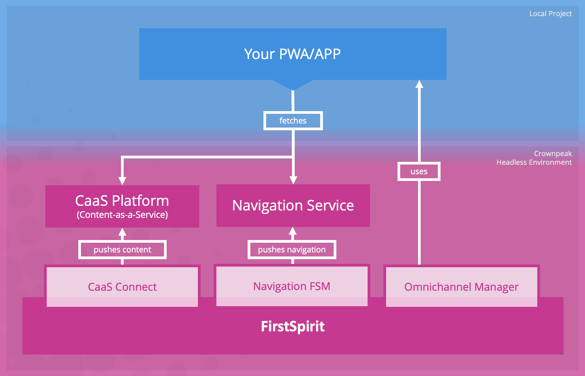

Project HeadStart
Welcome to the headless introduction project designed to provide you with a comprehensive understanding of Crownpeak CMS (FirstSpirit) and its key components, namely Content as a Service (CaaS) and NavigationService. In the ever-evolving digital landscape, headless CMS solutions have gained significant popularity due to their flexibility and ability to seamlessly deliver content across multiple channels and devices.
Getting Started
Within this project, we will delve into the inner workings of Crownpeak CMS, focusing specifically on CaaS and NavigationService. Content as a Service (CaaS) enables content to be treated as modular, reusable components that can be accessed via APIs. This approach allows developers to retrieve and display content in a headless manner, facilitating its integration into different applications, websites, or digital experiences.
NavigationService, on the other hand, provides a powerful set of tools and APIs to manage navigation structures within Crownpeak CMS. It enables the creation and maintenance of dynamic navigation menus, breadcrumbs, and other navigation elements, ensuring a seamless user experience across various devices and platforms.
So, let's embark on this headless journey together and unlock the full potential of Crownpeak CMS, CaaS, and NavigationService in delivering exceptional digital experiences.
The components used in the project
This project utilizes various components to achieve its goals. The following image illustrates the general architecture:
Throughout this project, we will provide detailed descriptions of each component used, highlighting their functionalities and how they contribute to the overall project objectives.
- Crownpeak CMS aka FirstSpirit
- CaaS
- Navigation Service
- Omnichannel Manager
- Webpack
- Tailwind
FirstSpirit CMS is a content management system that allows users to create, manage, and publish digital content across various channels and devices. more info
The CaaS platform serves as the bridge connecting FirstSpirit with the customer's end application. Through the REST Interface, information is received and seamlessly updated within the internal persistence layer of the CaaS platform. Requests made to the REST Interface trigger data updates in the customer's end application. more info
The Navigation Service module enables the conversion of a project's FirstSpirit site store structure into a JSON format and exposes it through the Navigation Service endpoint. As stated in the Navigation Service endpoint documentation, the structure can be accessed and queried using its REST interface. more info
Seamlessly manage your content in FirstSpirit ContentCreator directly within your Progressive Web App (PWA) using the advanced editing and workflow capabilities.
To integrate the OCM 3.0 API for custom app development, include the necessary JavaScript file in your frontend code. For in-depth integration guides and code samples, explore the comprehensive documentation at
https://docs.crownpeak.com/firstspirit/ocm/.
For detailed information on integrating the frontend API you can refer to the
documentation available at https://docs.e-spirit.com/tpp/snap.
Webpack is a popular module bundler for JavaScript applications. It takes all the modules and their dependencies and bundles them into a single optimized file. It enables developers to manage and optimize their project's assets, such as JavaScript files, CSS stylesheets, and images, while providing features like code splitting, hot module replacement, and tree shaking. more info
Tailwind CSS is a utility-first CSS framework that provides pre-defined classes for streamlined web development. It simplifies styling by using utility classes and offers customization options for creating modern and responsive websites. more info
Information about this startpage
This page has been statically generated and is designed to function as an introductory component for this project. Its behavior will vary based on the context in which it is accessed, whether it's within the FirstSpirit Content Creator (iframe) or directly in a web browser.
The Contexts:
There are three potential scenarios: operating within the ContentCreator with a compatible project, operating within the ContentCreator with any project, or operating outside of the ContentCreator.
Within the ContentCreator with a suitable project
If the project is open within the ContentCreator and it is a suitable project (where the FirstSpirit Project UUID matches the CaaS Project UUID), a connection will automatically be established. As an editor or developer, you will have the ability to navigate through the top navigation and make edits to the elements and the navigation itself.
Within the ContentCreator with any project
If the project is open within the ContentCreator but is not suitable (where the FirstSpirit Project UUID does not match the CaaS Project UUID), a connection will not be established automatically. In this case, as an editor or developer, you will not have the ability to navigate through the top navigation or make edits to the elements and navigation.
Outside of the ContentCreator
If the Single Page Application is accessed outside of the Content Creator, directly in the browser, you can establish the connection by following the steps outlined in the Connection section. This involves providing the CaaS Endpoint, API Key, and NavigationService values in the form. Once you save and connect using the button in the form, the SPA will be able to access the release or preview state of CaaS and NavigationService.
Connection
Here are the steps to follow:
- Verify if we are currently in the ContentCreator.
- If we are in the ContentCreator, attempt to retrieve the connection information from the currently opened project, specifically the endpoint of the navigation service, the CaaS endpoint, and the API key..
- If the project is opened outside of the ContentCreator or the ContentCreator provides invalid connection parameters, a form will be displayed to manually configure the required settings.
Connection Parameters and Status
Below is a button that provides you with all the necessary values, including the CaaS Endpoint, API Key, and NavigationService, to set up this Single Page Application (SPA) outside of the Content Creator. Please note that this information is only accessible within the Content Creator.
Navigation
In this section, we provide an example of how to call the Navigation Service. If the Connection mentioned above is successfully established, the result of the function call will be displayed. For more details about the endpoints of the Navigation Service, please refer to the provided link.
The NavigationService offers two format types.
The default format is designed to display the navigation tree stored in FirstSpirit. The CaaS Format
mode is specifically designed to help the application access structure elements in the CaaS in the
form of an ID Map.
In the code example below, you can see how to fetch the NavigationService using the CaaS Format Mode. If the connection is successful, the result will be displayed.
Code example for Navigation Service:
Result:
Sitemap & Navigation Service
In this example, you can see the rendered result of a sitemap that fetches the Navigation Service with the default format. The complete navigation, which is stored in the Content Creator Navigation, is displayed here. As you can see in the example, the elements vary between pages and page folders, similar to FirstSpirit. If you click on the icon attached to each element, the result of the Navigation Service will be displayed in an overlay.
Sitemap
CaaS Content
In the next example, we will demonstrate the process of fetching a document in the CaaS. All documents are located within the project UUID and can vary between preview and release content. In this specific function, we will be fetching the homepage, and the ID of the document has been obtained through the Navigation Service.
More Information
Next, please click on the Rendering of a teaser image main navigation to understand how the JSON from the CaaS object can be rendered.
To access a detailed explanation of the headless architecture, please refer to our reference architecture documentation. It can be found at the following link: https://docs.crownpeak.com/reference-architectures/firstspirit/headless/
This project provides a seamless introduction to the headless capabilities of FirstSpirit. For more complex projects that require server-side rendering (SSR), caching, and other critical aspects, the Javascript Content API Library supports the retrieval of content from the CaaS and navigation services. The Javascript Content API Library is compatible with all popular JavaScript frameworks. For more details, please refer to: https://github.com/e-Spirit/javascript-content-api-library
Additionally, if you are looking for a practical example of how to build a project using a JavaScript framework and leveraging the Content API, we have the Crownpeak PWA Template project available. This project is based on Nuxt3/VueJS 3. For further information, please visit: https://github.com/e-Spirit/crownpeak-pwa-template